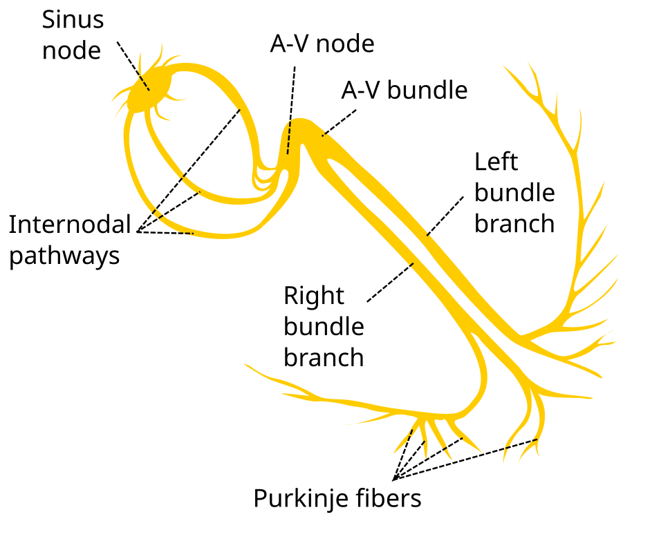

Mechanism of VT
How the electrical circuit breaks, and why that produces the EKG findings you see.
The Normal Path
In a normal heartbeat, the electrical impulse starts in the SA node, travels through the atria, passes through the AV node (the only bridge between atria and ventricles), and then races down the His-Purkinje system. The His bundle splits into right and left bundle branches, which fan out into Purkinje fibers that activate both ventricles almost simultaneously.
This produces a narrow QRS complex (<120ms) because the entire ventricular mass depolarizes in a coordinated, rapid wave.

The normal conduction system: SA node to AV node to His bundle to bundle branches to Purkinje fibers.
What Goes Wrong in VT
Ventricular tachycardia bypasses the His-Purkinje system entirely. The impulse originates in the ventricular muscle itself and spreads cell-to-cell through the myocardium. This is slow. Instead of the synchronized, rapid activation that produces a narrow QRS, the impulse crawls through muscle, producing a wide, bizarre QRS complex.
The three mechanisms
1. Reentry (most common, ~80% of MMVT)
After a myocardial infarction, dead muscle is replaced by scar tissue. Scar doesn't conduct electricity, but surviving muscle fibers weave through and around it, creating channels of slow conduction. Under the right conditions, an electrical impulse can enter one end of a channel, crawl through it slowly, and emerge at the other end to find the surrounding muscle has recovered and is ready to be activated again. The impulse then circles back and repeats, creating a self-sustaining loop.
The key ingredients: (1) a region of slow conduction (the scar channel), (2) a region of normal conduction, and (3) a unidirectional block that forces the impulse to travel in one direction around the circuit. Every lap around the circuit produces one QRS complex.
Impulse enters channel, crawls through slowly
Exits to find recovered tissue
Circles back, re-enters the channel
Repeat = sustained VT
2. Triggered Activity
Some ventricular cells develop abnormal oscillations in their membrane voltage after a normal beat (afterdepolarizations). If these oscillations are large enough, they trigger a new action potential, which triggers another, which triggers another, producing a rapid run of ventricular beats.
Early afterdepolarizations (EADs) occur during repolarization and are associated with long QT syndrome and Torsades de Pointes (PMVT). Delayed afterdepolarizations (DADs) occur after repolarization is complete and are associated with digoxin toxicity, catecholamine excess, and some idiopathic VTs.
3. Abnormal Automaticity
Ventricular cells that normally sit quietly and wait for instructions develop their own spontaneous firing rate. Ischemia, electrolyte abnormalities, or structural changes can cause ventricular cells to depolarize on their own, taking over the rhythm. This is less common as a cause of sustained monomorphic VT.

Reentry circuit: the impulse circles around a region of scar, re-exciting the same tissue with each lap.
How Mechanism Produces EKG Findings
Every feature you use to diagnose VT on the EKG is a direct consequence of the mechanism. Here's the chain from circuit to tracing:
The impulse bypasses the fast His-Purkinje system and spreads slowly through ventricular muscle, cell by cell. This slow conduction takes longer, producing a wider QRS. The wider the QRS, the more likely the impulse is traveling through muscle rather than the conduction system.
In VT, the ventricles fire on their own from the reentry circuit. The SA node keeps pacing the atria at its normal rate, completely unaware of what the ventricles are doing. The result: P waves march at one rate, QRS complexes march at a different (faster) rate, with no relationship between them. This can only happen if the ventricles have their own independent pacemaker.
Occasionally, a sinus impulse makes it through the AV node at the exact moment the VT circuit fires. The ventricles are activated from two directions simultaneously: the normal His-Purkinje pathway from above and the VT focus from within the muscle. The resulting QRS is a hybrid, narrower than the VT beat but wider than the sinus beat. This proves two independent sources are competing for ventricular activation.
If the sinus impulse arrives at just the right moment when the ventricles are fully recovered and the VT circuit hasn't fired yet, the normal conduction system captures the ventricles completely. You see a single narrow QRS in the middle of the wide complex tachycardia. A narrow beat during a wide complex run is proof the wide beats aren't coming from the conduction system.
In a reentry circuit, the impulse exits the scar from a single point and spreads outward in one direction through the ventricles. Since there's one exit site, the wavefront moves the same direction across all precordial leads (V1-V6). In normal conduction, the wavefront transitions across the precordium (negative in V1, positive in V6). When all leads agree, the impulse came from a single ventricular focus.
In reentrant VT, the circuit is fixed. The impulse takes the same path around the scar, exits from the same point, and activates the ventricles in the same sequence every time. Since the activation pattern is identical with each lap, every QRS complex looks the same. If the morphology changes beat to beat, either there are multiple circuits (polymorphic VT) or the mechanism isn't simple reentry.
The normal QRS axis points down and to the left (0 to +90 degrees) because the His-Purkinje system activates the ventricles from top to bottom, right to left. When VT originates from the apex or inferior wall, the impulse travels upward and to the right, producing an axis in the "northwest" quadrant (-90 to +180 degrees). This direction is nearly impossible to achieve through the normal conduction system.
Why This Matters
Every criterion in the VT ACED mnemonic traces back to a single principle: the impulse is bypassing the His-Purkinje system and crawling through ventricular muscle. Wide QRS, independent atria, hybrid beats, uniform exit, extreme axis. They're all consequences of the same thing. If you understand the circuit, you don't need to memorize the criteria. You can derive them.